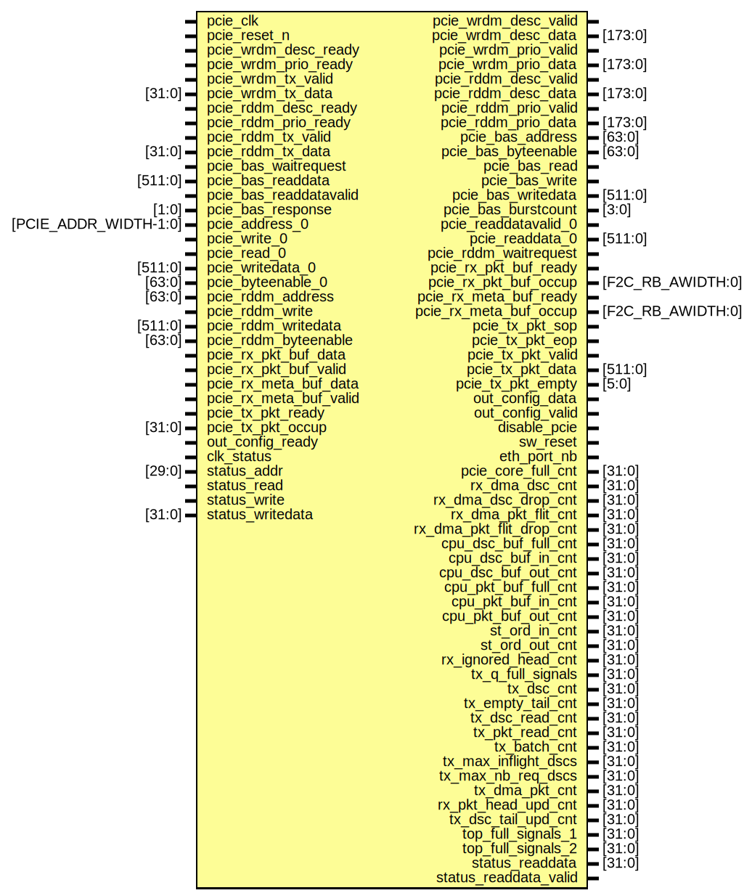

Entity: pcie_top
- File: pcie_top.sv
Diagram

Ports
| Port name | Direction | Type | Description |
|---|---|---|---|
| pcie_clk | input | ||
| pcie_reset_n | input | ||
| pcie_wrdm_desc_ready | input | ||
| pcie_wrdm_desc_valid | output | ||
| pcie_wrdm_desc_data | output | [173:0] | |
| pcie_wrdm_prio_ready | input | ||
| pcie_wrdm_prio_valid | output | ||
| pcie_wrdm_prio_data | output | [173:0] | |
| pcie_wrdm_tx_valid | input | ||
| pcie_wrdm_tx_data | input | [31:0] | |
| pcie_rddm_desc_ready | input | ||
| pcie_rddm_desc_valid | output | ||
| pcie_rddm_desc_data | output | [173:0] | |
| pcie_rddm_prio_ready | input | ||
| pcie_rddm_prio_valid | output | ||
| pcie_rddm_prio_data | output | [173:0] | |
| pcie_rddm_tx_valid | input | ||
| pcie_rddm_tx_data | input | [31:0] | |
| pcie_bas_waitrequest | input | ||
| pcie_bas_address | output | [63:0] | |
| pcie_bas_byteenable | output | [63:0] | |
| pcie_bas_read | output | ||
| pcie_bas_readdata | input | [511:0] | |
| pcie_bas_readdatavalid | input | ||
| pcie_bas_write | output | ||
| pcie_bas_writedata | output | [511:0] | |
| pcie_bas_burstcount | output | [3:0] | |
| pcie_bas_response | input | [1:0] | |
| pcie_address_0 | input | [PCIE_ADDR_WIDTH-1:0] | |
| pcie_write_0 | input | ||
| pcie_read_0 | input | ||
| pcie_readdatavalid_0 | output | ||
| pcie_readdata_0 | output | [511:0] | |
| pcie_writedata_0 | input | [511:0] | |
| pcie_byteenable_0 | input | [63:0] | |
| pcie_rddm_address | input | [63:0] | |
| pcie_rddm_write | input | ||
| pcie_rddm_writedata | input | [511:0] | |
| pcie_rddm_byteenable | input | [63:0] | |
| pcie_rddm_waitrequest | output | ||
| pcie_rx_pkt_buf_data | input | ||
| pcie_rx_pkt_buf_valid | input | ||
| pcie_rx_pkt_buf_ready | output | ||
| pcie_rx_pkt_buf_occup | output | [F2C_RB_AWIDTH:0] | |
| pcie_rx_meta_buf_data | input | ||
| pcie_rx_meta_buf_valid | input | ||
| pcie_rx_meta_buf_ready | output | ||
| pcie_rx_meta_buf_occup | output | [F2C_RB_AWIDTH:0] | |
| pcie_tx_pkt_sop | output | ||
| pcie_tx_pkt_eop | output | ||
| pcie_tx_pkt_valid | output | ||
| pcie_tx_pkt_data | output | [511:0] | |
| pcie_tx_pkt_empty | output | [5:0] | |
| pcie_tx_pkt_ready | input | ||
| pcie_tx_pkt_occup | input | [31:0] | |
| out_config_data | output | ||
| out_config_valid | output | ||
| out_config_ready | input | ||
| disable_pcie | output | ||
| sw_reset | output | ||
| eth_port_nb | output | ||
| pcie_core_full_cnt | output | [31:0] | |
| rx_dma_dsc_cnt | output | [31:0] | |
| rx_dma_dsc_drop_cnt | output | [31:0] | |
| rx_dma_pkt_flit_cnt | output | [31:0] | |
| rx_dma_pkt_flit_drop_cnt | output | [31:0] | |
| cpu_dsc_buf_full_cnt | output | [31:0] | |
| cpu_dsc_buf_in_cnt | output | [31:0] | |
| cpu_dsc_buf_out_cnt | output | [31:0] | |
| cpu_pkt_buf_full_cnt | output | [31:0] | |
| cpu_pkt_buf_in_cnt | output | [31:0] | |
| cpu_pkt_buf_out_cnt | output | [31:0] | |
| st_ord_in_cnt | output | [31:0] | |
| st_ord_out_cnt | output | [31:0] | |
| rx_ignored_head_cnt | output | [31:0] | |
| tx_q_full_signals | output | [31:0] | |
| tx_dsc_cnt | output | [31:0] | |
| tx_empty_tail_cnt | output | [31:0] | |
| tx_dsc_read_cnt | output | [31:0] | |
| tx_pkt_read_cnt | output | [31:0] | |
| tx_batch_cnt | output | [31:0] | |
| tx_max_inflight_dscs | output | [31:0] | |
| tx_max_nb_req_dscs | output | [31:0] | |
| tx_dma_pkt_cnt | output | [31:0] | |
| rx_pkt_head_upd_cnt | output | [31:0] | |
| tx_dsc_tail_upd_cnt | output | [31:0] | |
| top_full_signals_1 | output | [31:0] | |
| top_full_signals_2 | output | [31:0] | |
| clk_status | input | ||
| status_addr | input | [29:0] | |
| status_read | input | ||
| status_write | input | ||
| status_writedata | input | [31:0] | |
| status_readdata | output | [31:0] | |
| status_readdata_valid | output | ||
| ## Instantiations |
- head_upd_queue: fifo_wrapper_infill_mlab
- rx_dsc_q_table_tails: bram_interface_io
- rx_dsc_q_table_heads: bram_interface_io
- rx_dsc_q_table_l_addrs: bram_interface_io
- rx_dsc_q_table_h_addrs: bram_interface_io
- tx_dsc_q_table_tails: bram_interface_io
- tx_dsc_q_table_heads: bram_interface_io
- tx_dsc_q_table_l_addrs: bram_interface_io
- tx_dsc_q_table_h_addrs: bram_interface_io
- pkt_q_table_tails: bram_interface_io
- pkt_q_table_heads: bram_interface_io
- pkt_q_table_l_addrs: bram_interface_io
- pkt_q_table_h_addrs: bram_interface_io
- pqm_pkt_q_table_tails[NB_PKT_QUEUE_MANAGERS]: bram_interface_io
- pqm_pkt_q_table_heads[NB_PKT_QUEUE_MANAGERS]: bram_interface_io
- pqm_pkt_q_table_l_addrs[NB_PKT_QUEUE_MANAGERS]: bram_interface_io
- pqm_pkt_q_table_h_addrs[NB_PKT_QUEUE_MANAGERS]: bram_interface_io
- pkt_q_table_tails_mux: bram_mux
- pkt_q_table_heads_mux: bram_mux
- pkt_q_table_l_addrs_mux: bram_mux
- pkt_q_table_h_addrs_mux: bram_mux
- jtag_mmio_arbiter_inst: jtag_mmio_arbiter
- pkt_queue_manager_inst [NB_PKT_QUEUE_MANAGERS]: pkt_queue_manager
- rx_dsc_queue_manager_inst: rx_dsc_queue_manager
- fpga_to_cpu_inst: fpga_to_cpu
- cpu_to_fpga_inst: cpu_to_fpga